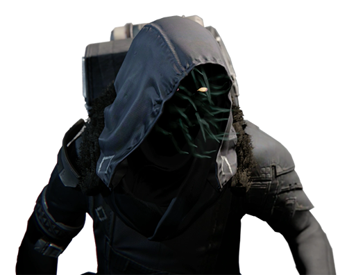

Contact
How to reach Xur
Xur is a tricksy and unpredictable fellow. He just can't stay in one place for long. The best way to reach Xur is just to keep your eye out for him ;)

About Stock
Again, Xur is unpredictable. His stock may vary, but we can guarantee he will always have something listen on the menu page.